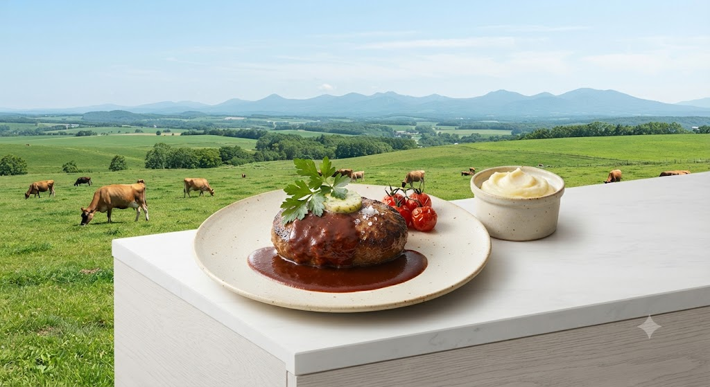
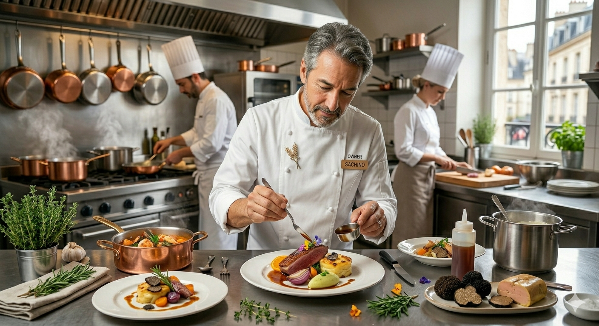
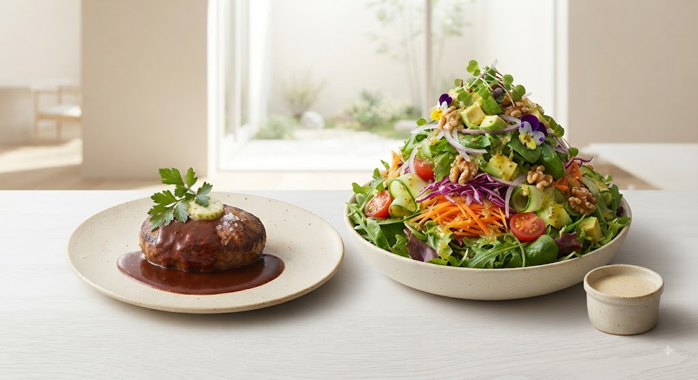
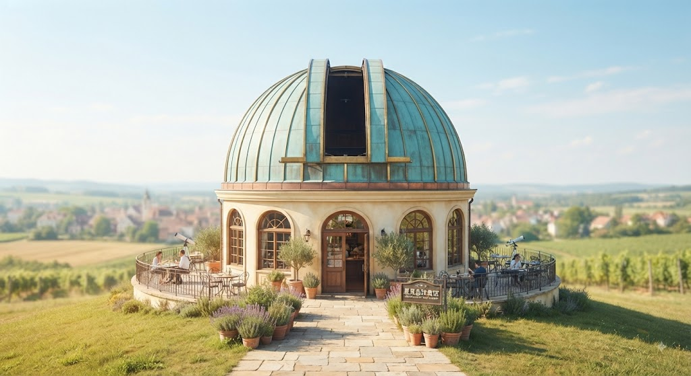
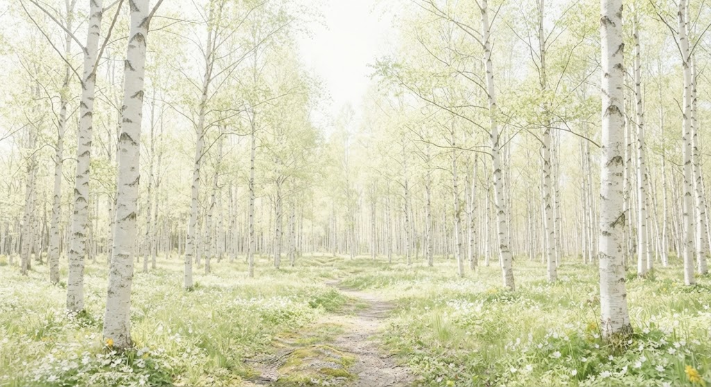

白樺の林を抜けて、別世界へ。
La motrice Shintoku
銀座の懐石で磨かれた技が、
新得の土から生まれた素材と出会う。
ここは、心まで満たす大人の隠れ家。
東京・銀座。一流が鎬を削る街で、長年懐石料理の伝統と向き合ってきた店主。
その店主が選んだ場所は、北海道・新得町。
白樺の林に包まれた高台のドームハウス。窓いっぱいに広がる十勝の空と、店内に流れるモダンなJAZZ。
「素材の味を、下手に触らず、しっかりと味わってほしい」。
その想いは、一皿のサラダ、一切れのパン、そして溢れる肉汁のハンバーグへと注がれます。


地元の野菜が織りなす芸術的な盛り付け。一口ごとに、野菜本来の「濃い」旨みが広がります。
ジューシーかつ肉肉しい食感。十勝の恵みを一塊に凝縮した、当店一番の人気メニューです。
※旬の食材など、時期に合わせた特別なコースもご用意しております。

ドームハウスの吹き抜け

白樺に囲まれた高台
天文台のような不思議なドーム。見晴らしの良い高台で、晴れた日には十勝の青空が溶け込んでくるような開放感を。
夜は静寂に包まれ、予約制の貸切空間として特別なひとときを演出します。
「甘くて濃い野菜の美味しさを実感出来るサラダ。ジャージー牛のハンバーグもジューシーで肉肉しい味、こちらにも色とりどりの野菜がたっぷりで美味しかったです。」
— 来店時評価 ★★★★☆
「白樺の林に入った所で別世界に入り込んだ気になります。盛り付け、彩り、味付け。全てが素晴らしい。見ても美味しい食べても美味しい。」
— 来店時評価 ★★★★★
La motriceは、少し辺鄙な場所にあります。
セブンイレブンの交差点を右折し、レストランの案内板を目印にお越しください。
※カーナビでは辿り着けない場合がございます。Googleマップのご利用を推奨します。
Address
〒081-0035
北海道上川郡新得町上佐幌
西三線23-4
Phone
0156-64-2222Open
ランチ / ディナー（夜は要予約）
定休日：火曜日
※海の日の振り替え休日等の場合あり
お客様により贅沢で快適な時間をお過ごしいただけるよう、
La motriceでは新たなサービスやプランの整備を進めております。
ワインやお酒を心ゆくまでお愉しみいただけるよう、JR新得駅やサホロエリア周辺ホテルからの送迎サービスを整備しております。
当店人気の「特選ジャージー牛ハンバーグ」や自家製ドレッシングをご自宅でお楽しみいただけるオンラインストアを開設予定です。
お客様の「甘いものがあればもっと嬉しい」という声にお応えして。
「LPを見た」とご予約いただいたお客様に、
シェフ特製の「小さな甘いもの」を食後にプレゼントいたします。